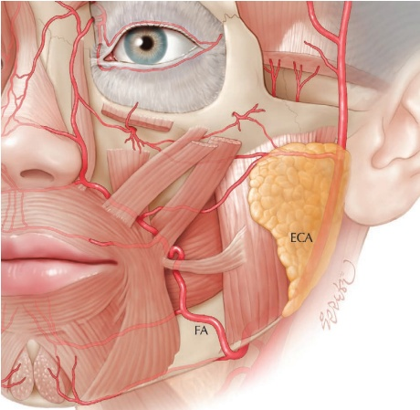
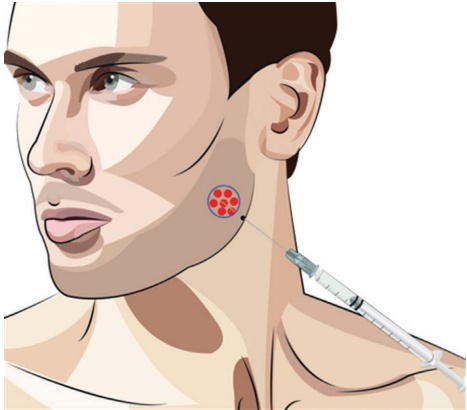
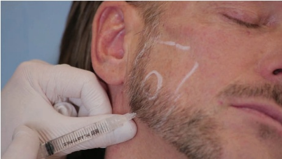
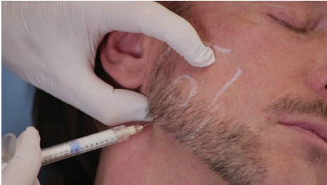
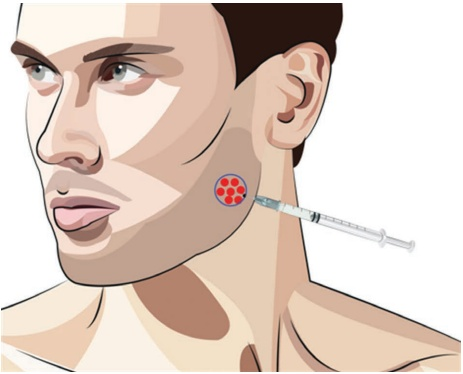
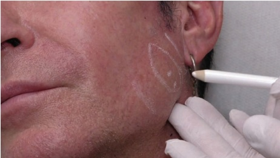
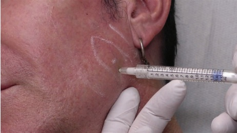
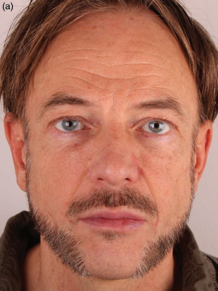
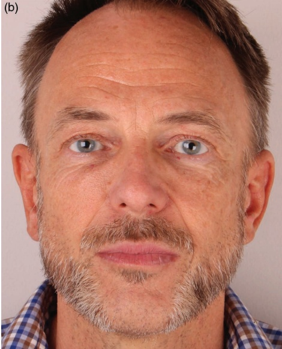

26 面部下三分之一：男性咬肌丰容
男性下部面部咬肌增厚
JANI VAN LOGHEM
26.1 引言
男性吸引力可以通过增强男性面部特征来改善。高睾酮水平会增加肌肉体积，因此发达的咬肌与男性气质和男性吸引力相关联。咬肌可以在不同的解剖层次进行增厚：皮下（如在下颌角和下颌缘章节所述）以及在下颌骨的骨膜上。当使用锐针垂直于骨骼在骨膜上注射时，由于产品回流，产品会定位到肌肉内。采用钝性套管针技术可使产品主要定位在骨膜上 [1]。由于骨吸收，下颌骨会改变形状并变小 [2]。为了创造强健的下颌轮廓，可以增强下颌骨。
26.2 解剖学危险点
咬肌增厚术的解剖学危险点（图 26.1）与第 25 章讨论的下颌角和下颌缘治疗具有共同之处。

简而言之，面动脉和外颈动脉都走行于并穿过咬肌附着的下颌骨骨膜。此外，腮腺及其唾液导管位于肌肉上方。在骨膜上使用锐针进行操作会导致产品通过针道回流，应注射少量 CaHA 以最大程度地降低血管内和腺体内注射的风险。应避免注射到咬肌浅层肌肉室，因为也可能形成结节。
26.3 使用钝性套管针技术的咬肌增厚
有关注射定位，参见图 26.2。
26.3.1 分步技术
-
确定下颌角。
-
在皮肤进入点注射含有肾上腺素的麻醉剂，并持续向下颌角的骨骼方向注射（图 26.3）。
-
建立预孔。
-
使用 22G、50 mm 或 25G、38 mm 的钝性套管针和未稀释的 CaHA。
-
将钝性套管针推进皮肤。



-
将非优势手的拇指置于下颌骨边缘下方，以避免将钝性套管针推进到下颌骨后方。
-
注射一团 0.1–0.2 mL，将钝性套管针定位在几毫米处并再注射一团 0.1–0.2 mL。
-
重复在肌肉腹下方注射，直至达到所需效果。
-
在旋转过程中，使用足够的力气穿过颈阔肌筋膜（SMAS）和咬肌与下颌骨的粘连（图 26.4）。
-
将钝性套管针沿骨膜推进至咬肌腹最大投影点的水平。
26.4 使用锐针进行咬肌增厚
注射定位，参见图 26.5。
26.4.1 分步技术
-
使用未稀释的羟基磷灰石钙（CaHA）和 27G、20 mm 的锐针。
-
确定咬肌腹，标记并消毒（图 26.6）。
-
将锐针穿过皮肤，位于中央咬肌腹外侧，朝向骨膜方向推进。



-
用轻柔触感将锐针置于骨膜上，使其切口朝下（bevel down），角度约为 45°。这可以降低回流至肌肉更浅层区域的风险（图 26.7）。
-
在骨膜处注射一团 0.1–0.2 mL。
-
部分后退，重新定向并再次推进至骨膜。


-
在骨膜水平，沿肌肉中央腹部间距数毫米处注入多个 0.1–0.2 mL 的团注。
-
继续在肌肉腹部下方重复注射，直至达到所需效果。
有关术前和术后结果以及应用技术，请参阅图 26.8。
26.5 术后护理
如有必要，可手动按摩该区域以使产品均匀分布。注射到骨膜上的产品可能会进入肌肉深层，尤其是在使用锐针时。这可能导致咀嚼时疼痛或敏感。这是一个暂时性问题，应在大约三天内消退。
26.6 实现最佳效果的附加治疗
除了处理咬肌外，还可考虑进行颏部增强术以增强男性外观。
参考文献
[1] J. A. J. van Loghem et al., “Cannula versus sharp needle for placement of soft tissue fillers: An observational cadaver study,” Aesthet Surg J, vol. 38, no. 1, pp. 73–88, 2017.
[2] R. B. Shaw et al., “Aging of the facial skeleton: Aesthetic implications and rejuvenation strategies,” Plast Reconstr Surg, vol. 127, no. 1, pp. 374–383, 2011.